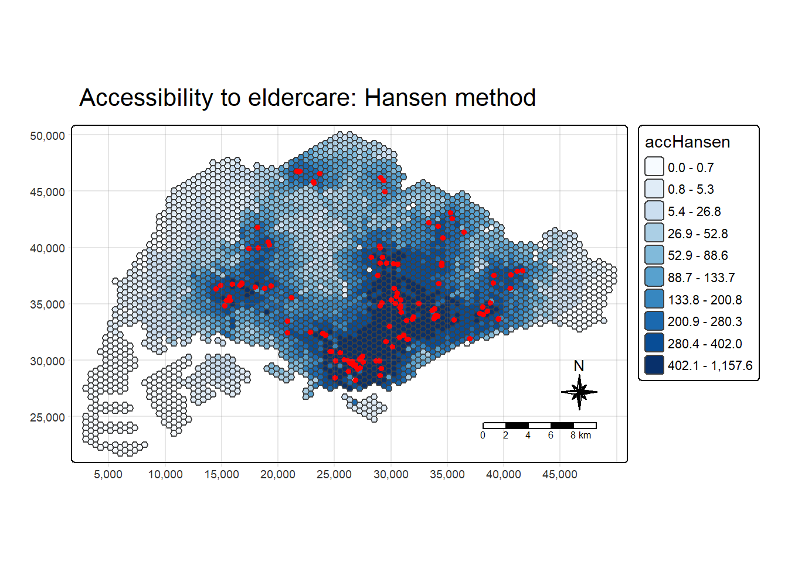
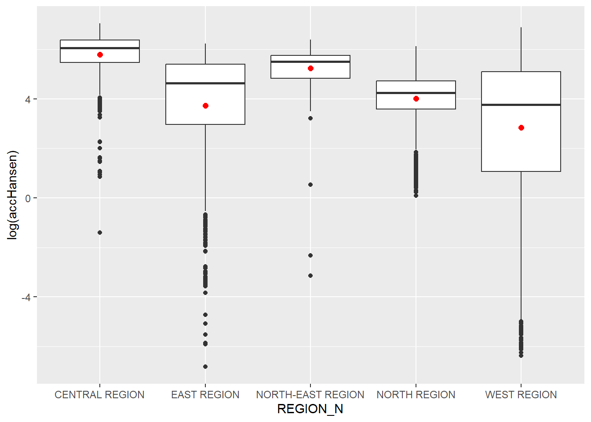
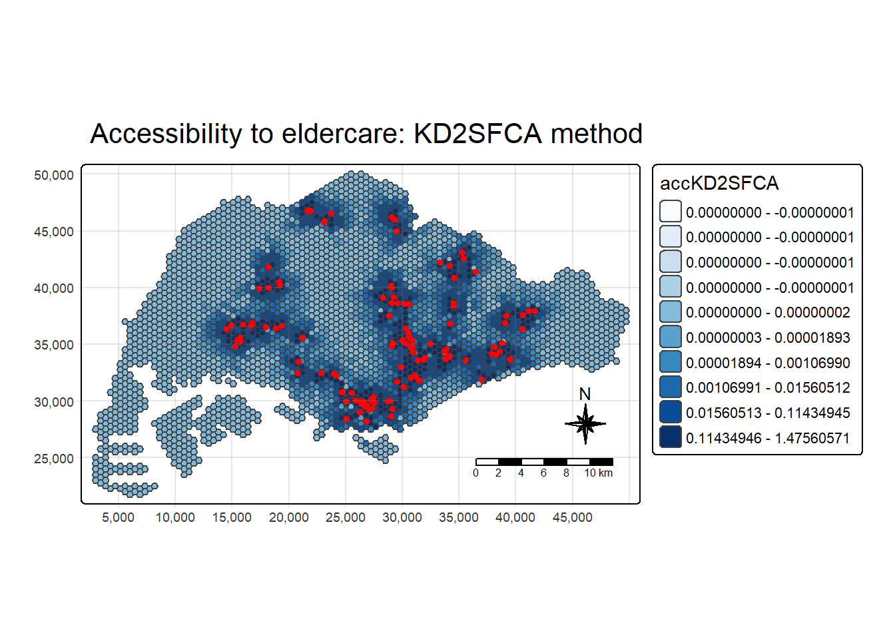
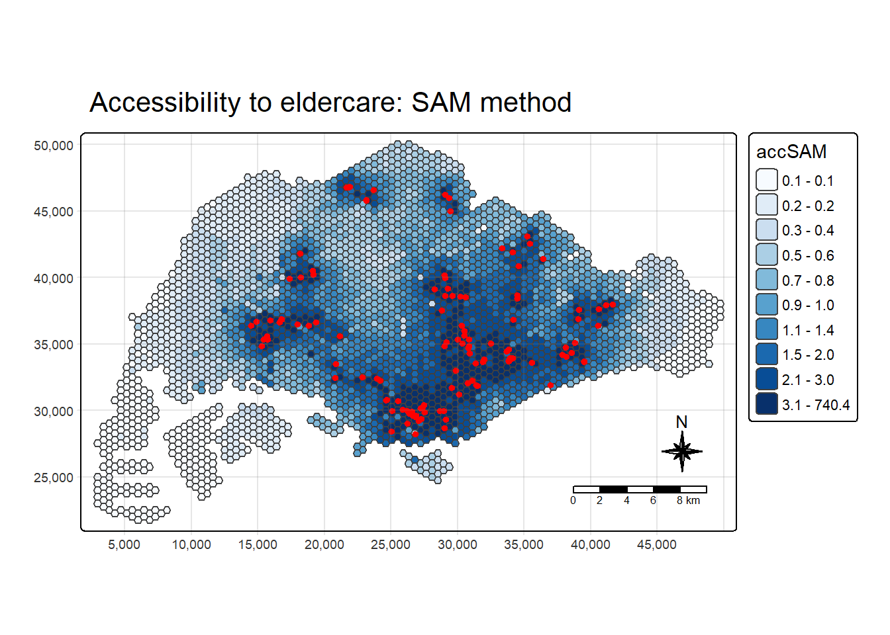
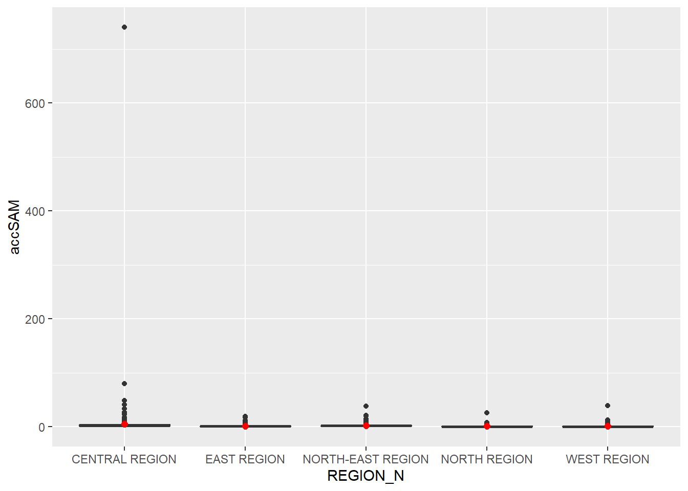

pacman::p_load(tmap, SpatialAcc, sf,
ggstatsplot, reshape2,
tidyverse)Hands-on Exercise 9 | Modelling Geographical Accessibility
In this exercise, we learn about Accessibility Measurement, with the aim of quantifying accessibility using established spatial models.
1 Introduction
Geospatial accessibility is a core concept in spatial analysis that measures the ease with which people can reach desired opportunities or services (like jobs, healthcare, schools, or grocery stores) from a given location, considering the friction of distance (usually measured in travel time or distance).
It goes beyond simply counting the number of services available by incorporating the spatial reality of travel impedance. For instance, an area might have many hospitals, but if they are all a two-hour drive away, accessibility is low. It’s fundamentally about opportunity and equity—ensuring that everyone, regardless of where they live, has reasonable access to necessary resources.
Key Skills:
Hansen’s Potential Model: Measures accessibility as a weighted sum of opportunities surrounding a location, where the opportunities are dampened (decayed) by travel time. It gives a single, relative “potential” score for each location.
Spatial Accessibility Measure (SAM): Refers to a class of models, often focusing on supply-demand balance, such as the Two-Step Floating Catchment Area (2SFCA) method. These measures calculate accessibility while considering both the supply capacity and the demand from surrounding areas, aiming to provide a more realistic access ratio.
2 The dataset
Four data sets will be used in this hands-on exercise, they are:
MP14_SUBZONE_NO_SEA_PL: URA Master Plan 2014 subzone boundary GIS data. This data set is downloaded from data.gov.sg.
hexagons: A 250m radius hexagons GIS data. This data set was created by using st_make_grid() of sf package. It is in ESRI shapefile format.
ELDERCARE: GIS data showing location of eldercare service. This data is downloaded from data.gov.sg. There are two versions. One in ESRI shapefile format. The other one in Google kml file format. For the purpose of this hands-on exercise, ESRI shapefile format is provided.
OD_Matrix: a distance matrix in csv format. There are six fields in the data file. They are:
- origin_id: the unique id values of the origin (i.e. fid of hexagon data set.),
- destination_id: the unique id values of the destination (i.e. fid of ELDERCARE data set.),
- entry_cost: the perpendicular distance between the origins and the nearest road),
- network_cost: the actual network distance from the origin and destination,
- exit_cost: the perpendicular distance between the destination and the nearest road), and
- total_cost: the summation of entry_cost, network_cost and exit_cost.
All the values of the cost related fields are in metres.
3 Installing R packages
Packages used: - spatialAcc: This is used to model geographical accessibility
4 Geospatial Data Wranglign
4.1 Importing geospatial data
mpsz <- st_read(dsn = "data/geospatial", layer = "MP14_SUBZONE_NO_SEA_PL")Reading layer `MP14_SUBZONE_NO_SEA_PL' from data source
`D:\ngoclinhnguyen-2806\ISSS626-GAA\Hands-on_Ex\Hands-on_Ex09\data\geospatial'
using driver `ESRI Shapefile'
Simple feature collection with 323 features and 15 fields
Geometry type: MULTIPOLYGON
Dimension: XY
Bounding box: xmin: 2667.538 ymin: 15748.72 xmax: 56396.44 ymax: 50256.33
Projected CRS: SVY21hexagons <- st_read(dsn = "data/geospatial", layer = "hexagons") Reading layer `hexagons' from data source
`D:\ngoclinhnguyen-2806\ISSS626-GAA\Hands-on_Ex\Hands-on_Ex09\data\geospatial'
using driver `ESRI Shapefile'
Simple feature collection with 3125 features and 6 fields
Geometry type: POLYGON
Dimension: XY
Bounding box: xmin: 2667.538 ymin: 21506.33 xmax: 50010.26 ymax: 50256.33
Projected CRS: SVY21 / Singapore TMeldercare <- st_read(dsn = "data/geospatial", layer = "ELDERCARE") Reading layer `ELDERCARE' from data source
`D:\ngoclinhnguyen-2806\ISSS626-GAA\Hands-on_Ex\Hands-on_Ex09\data\geospatial'
using driver `ESRI Shapefile'
Simple feature collection with 120 features and 19 fields
Geometry type: POINT
Dimension: XY
Bounding box: xmin: 14481.92 ymin: 28218.43 xmax: 41665.14 ymax: 46804.9
Projected CRS: SVY21 / Singapore TMThe report above shows that the R object used to contain the imported MP14_SUBZONE_WEB_PL shapefile is called mpsz and it is a simple feature object. The geometry type is multipolygon. it is also important to note that mpsz simple feature object does not have EPSG information.
4.2 Updating CRS information
We update the mpsz data with correct ESPG code (i.e. 3414)
mpsz <- st_transform(mpsz, 3414)
eldercare <- st_transform(eldercare, 3414)
hexagons <- st_transform(hexagons, 3414)After the transformation, we will verify the projection of the newly transformed mpsz_svy21 by using st_crs() of sf package.
st_crs(mpsz)Coordinate Reference System:
User input: EPSG:3414
wkt:
PROJCRS["SVY21 / Singapore TM",
BASEGEOGCRS["SVY21",
DATUM["SVY21",
ELLIPSOID["WGS 84",6378137,298.257223563,
LENGTHUNIT["metre",1]]],
PRIMEM["Greenwich",0,
ANGLEUNIT["degree",0.0174532925199433]],
ID["EPSG",4757]],
CONVERSION["Singapore Transverse Mercator",
METHOD["Transverse Mercator",
ID["EPSG",9807]],
PARAMETER["Latitude of natural origin",1.36666666666667,
ANGLEUNIT["degree",0.0174532925199433],
ID["EPSG",8801]],
PARAMETER["Longitude of natural origin",103.833333333333,
ANGLEUNIT["degree",0.0174532925199433],
ID["EPSG",8802]],
PARAMETER["Scale factor at natural origin",1,
SCALEUNIT["unity",1],
ID["EPSG",8805]],
PARAMETER["False easting",28001.642,
LENGTHUNIT["metre",1],
ID["EPSG",8806]],
PARAMETER["False northing",38744.572,
LENGTHUNIT["metre",1],
ID["EPSG",8807]]],
CS[Cartesian,2],
AXIS["northing (N)",north,
ORDER[1],
LENGTHUNIT["metre",1]],
AXIS["easting (E)",east,
ORDER[2],
LENGTHUNIT["metre",1]],
USAGE[
SCOPE["Cadastre, engineering survey, topographic mapping."],
AREA["Singapore - onshore and offshore."],
BBOX[1.13,103.59,1.47,104.07]],
ID["EPSG",3414]]EPSG has become 3414 now.
4.3 Cleaning and updating attribute fields of the geospatial data
There are many redundant fields in the data tables of both eldercare and hexagons. The code chunks below will be used to exclude those redundant fields. At the same time, a new field called demand and a new field called capacity will be added into the data table of hexagons and eldercare sf data frame respectively. Both fields are derive using mutate() of dplyr package.
eldercare <- eldercare %>%
select(fid, ADDRESSPOS) %>%
mutate(capacity = 100)hexagons <- hexagons %>%
select(fid) %>%
mutate(demand = 100)For this exercise, we use a constant value of 100, but actual demand of the hexagon and capacity of the eldercare centre should be used in practice.
5 Aspatial Data Handling and Wrangling
5.1 Importing Distance Matrix
The code chunk below uses read_cvs() of readr package to import OD_Matrix.csv into RStudio. The imported object is a tibble data.frame called ODMatrix.
ODMatrix <- read_csv("data/aspatial/OD_Matrix.csv", skip = 0)5.2 Tidying distance matrix
We use spread() of tidyr package to transform the O-D matrix from a thin format into a fat format.
Currently, the distance is measured in metres because SVY21 projected coordinate system is used. We will then convert the unit f measurement from metre to kilometre.
distmat_km <- as.matrix(distmat/1000)6 Modelling and Visualising Accessibility using Hansen Method
6.1 Computing Hansen’s accessibility
We will compute Hansen’s accessibility using ac() of SpatialAcc package.
acc_Hansen <- data.frame(ac(hexagons$demand,
eldercare$capacity,
distmat_km,
#d0 = 50,
power = 2,
family = "Hansen"))Changing the column name to “accHansen” for better readability.
colnames(acc_Hansen) <- "accHansen"Next, we will convert the data table into tibble format.
acc_Hansen <- as_tibble(acc_Hansen)Lastly, bind_cols() of dplyr will be used to join the acc_Hansen tibble data frame with the hexagons simple feature data frame. The output is called hexagon_Hansen.
hexagon_Hansen <- bind_cols(hexagons, acc_Hansen)acc_Hansen <- data.frame(ac(hexagons$demand,
eldercare$capacity,
distmat_km,
#d0 = 50,
power = 0.5,
family = "Hansen"))
colnames(acc_Hansen) <- "accHansen"
acc_Hansen <- as_tibble(acc_Hansen)
hexagon_Hansen <- bind_cols(hexagons, acc_Hansen)6.2 Visualising Hansen’s accessibility
6.2.1 Extracting map extend
Firstly, we will extract the extend of hexagons simple feature data frame by by using st_bbox() of sf package.
mapex <- st_bbox(hexagons)We use a collection of mapping fucntions of tmap package to create a high cartographic quality accessibility to eldercare centres in Singapore.
tm_shape(hexagon_Hansen,
bbox = mapex) +
tm_polygons(fill = "accHansen",
fill.scale = tm_scale_intervals(
style = "quantile",
n = 10,
values = "brewer.blues")) +
tm_shape(eldercare) +
tm_dots(size = 0.3,
fill = "red",
col = "black") +
tm_title("Accessibility to eldercare: Hansen method") +
tm_layout(frame = TRUE) +
tm_compass(type="8star", size = 2) +
tm_scalebar() +
tm_grid(alpha = 0.2)
6.3 Statistical graphic visualisation
We are going to compare the distribution of Hansen’s accessibility values by URA Planning Region.
Firstly, we need to add the planning region field into the hexagon_Hansen simple feature data frame.
hexagon_Hansen <- st_join(hexagon_Hansen, mpsz,
join = st_intersects)Next, ggplot() will be used to plot the distribution by using boxplot graphical method.
ggplot(data=hexagon_Hansen,
aes(y = log(accHansen),
x= REGION_N)) +
geom_boxplot() +
geom_point(stat="summary",
fun.y="mean",
colour ="red",
size=2)
7 Modelling and Visualising Accessibility using KD2SFCA Method
7.1 Computing KD2SFCA’s accessibility
We will calculate Hansen’s accessibility using ac() of SpatialAcc and data.frame() is used to save the output in a data frame called acc_KD2SFCA. Notice that KD2SFCA is used for family argument.
acc_KD2SFCA <- data.frame(ac(hexagons$demand,
eldercare$capacity,
distmat_km,
d0 = 5,
power = 2,
family = "KD2SFCA"))
colnames(acc_KD2SFCA) <- "accKD2SFCA"
acc_KD2SFCA <- as_tibble(acc_KD2SFCA)
hexagon_KD2SFCA <- bind_cols(hexagons, acc_KD2SFCA)7.2 Visualising KD2SFCA’s accessibility
We use a collection of mapping functions of tmap package to create a high cartographic quality accessibility to eldercare centres in Singapore. Notice that mapex is reused for bbox argument.
tm_shape(hexagon_KD2SFCA,
bbox = mapex) +
tm_polygons(fill = "accKD2SFCA",
fill.scale = tm_scale_intervals(
style = "quantile",
n = 10,
values = "brewer.blues")) +
tm_shape(eldercare) +
tm_dots(size = 0.3,
fill = "red",
col = "black") +
tm_title("Accessibility to eldercare: KD2SFCA method") +
tm_layout(frame = TRUE) +
tm_compass(type="8star", size = 2) +
tm_scalebar() +
tm_grid(alpha = 0.2)
7.3 Statistical graphic visualisation
Now, we are going to compare the distribution of KD2CFA accessibility values by URA Planning Region.
Firstly, we need to add the planning region field into hexagon_KD2SFCA simple feature data frame.
hexagon_KD2SFCA <- st_join(hexagon_KD2SFCA, mpsz,
join = st_intersects)Next, ggplot() will be used to plot the distribution by using boxplot graphical method.
ggplot(data=hexagon_KD2SFCA,
aes(y = accKD2SFCA,
x= REGION_N)) +
geom_boxplot() +
geom_point(stat="summary",
fun.y="mean",
colour ="red",
size=2)
8 Modelling and Visualising Accessibility using Spatial Accessibility Measure (SAM) Method
8.1 Computing SAM accessibility
We will calculate Hansen’s accessibility using ac() of SpatialAcc and data.frame() is used to save the output in a data frame called acc_SAM. Notice that SAM is used for family argument.
acc_SAM <- data.frame(ac(hexagons$demand,
eldercare$capacity,
distmat_km,
d0 = 5,
power = 2,
family = "SAM"))
colnames(acc_SAM) <- "accSAM"
acc_SAM <- as_tibble(acc_SAM)
hexagon_SAM <- bind_cols(hexagons, acc_SAM)8.2 Visualising SAM’s accessibility
We use a collection of mapping fucntions of tmap package to create a high cartographic quality accessibility to eldercare centres in Singapore. Notice that mapex is reused for bbox argument.
tm_shape(hexagon_SAM,
bbox = mapex) +
tm_polygons(fill = "accSAM",
fill.scale = tm_scale_intervals(
style = "quantile",
n = 10,
values = "brewer.blues")) +
tm_shape(eldercare) +
tm_dots(size = 0.3,
fill = "red",
col = "black") +
tm_title("Accessibility to eldercare: SAM method") +
tm_layout(frame = TRUE) +
tm_compass(type="8star", size = 2) +
tm_scalebar() +
tm_grid(alpha = 0.2)
8.3 Statistical graphic visualisation
Now, we are going to compare the distribution of SAM accessibility values by URA Planning Region.
Firstly, we need to add the planning region field into hexagon_SAM simple feature data frame by using the code chunk below.
hexagon_SAM <- st_join(hexagon_SAM, mpsz,
join = st_intersects)Next, ggplot() will be used to plot the distribution by using boxplot graphical method.
ggplot(data=hexagon_SAM,
aes(y = accSAM,
x= REGION_N)) +
geom_boxplot() +
geom_point(stat="summary",
fun.y="mean",
colour ="red",
size=2)